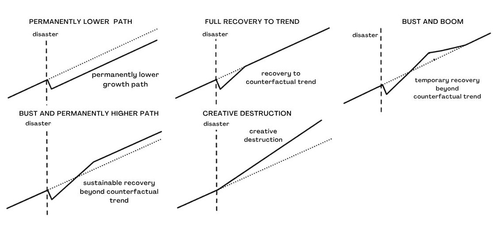
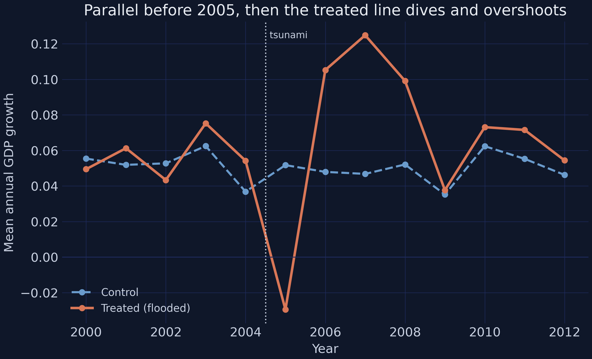
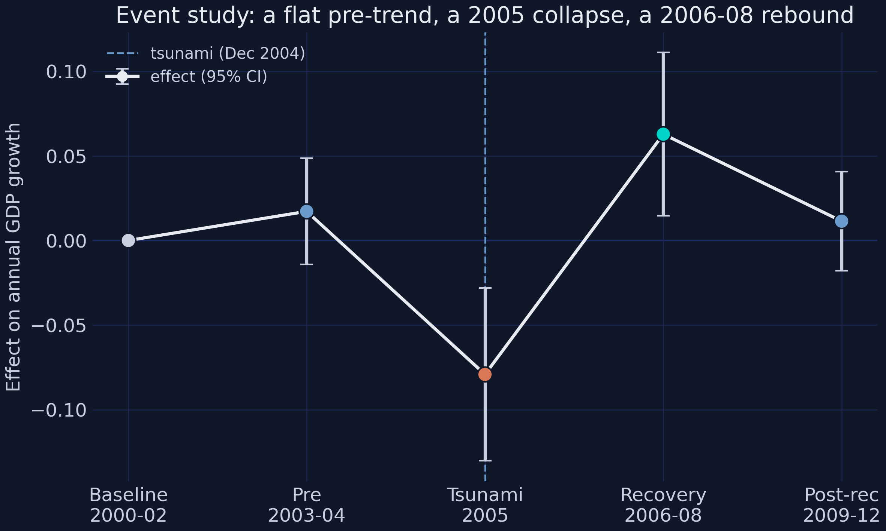
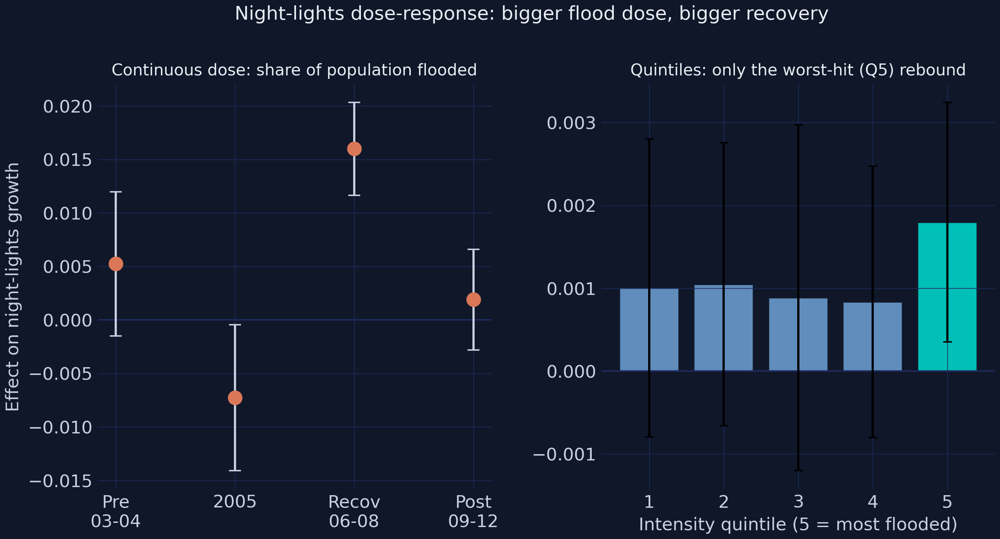
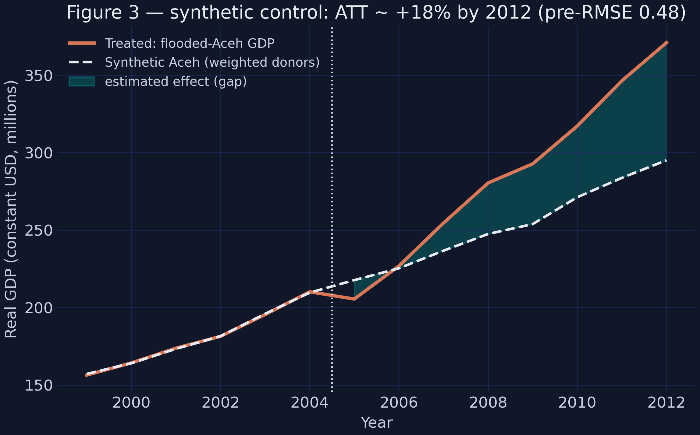
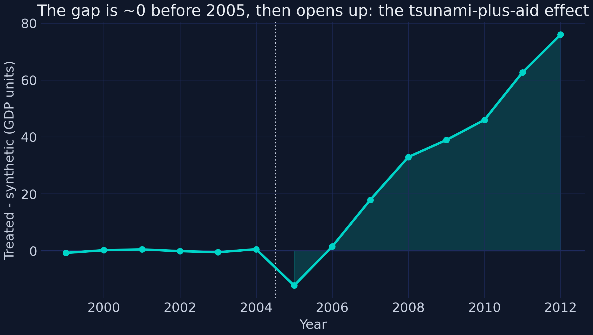
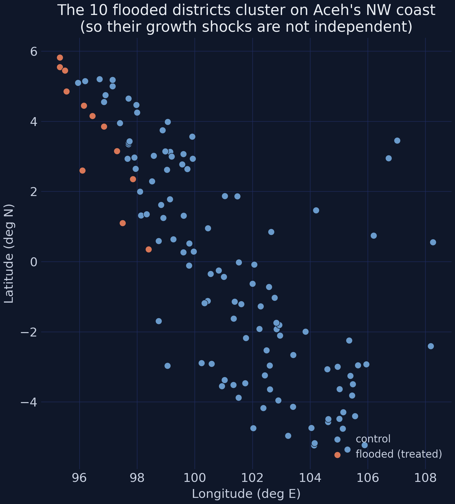

Evaluating the economic impact of the 2004 Aceh tsunami
Nagoya University (GSID)
June 12, 2026
Act I
A third of Aceh’s coastline, flooded in one morning. Then the largest disaster-reconstruction effort ever — about USD 7.0 billion, well spent.
A decade later: was Aceh richer or poorer than without the wave?
To answer it, we need Aceh’s counterfactual — the output it would have had with no tsunami. That world is never observed; it must be estimated.
Our target is the ATT — the average effect of the treatment on the treated:
\[\text{ATT} = E[\,Y(1) - Y(0) \mid D = 1\,]\]
The effect on the flooded districts — not on some randomly chosen district.
Elevation, vegetation, and offshore depth decided which coast flooded — read off satellite maps, not chosen by economics. So flooded vs spared is plausibly unrelated to a district’s economic prospects.
A note on the data. Everything here runs on synthetic, calibrated data — tuned to reproduce Heger & Neumayer (2019)’s signs, significance, and approximate magnitudes. Learn the methods, not new facts about Aceh.
After the wave, Aceh could have landed anywhere on a menu of trajectories — measured against the output it would have had with no tsunami (the dotted counterfactual).

A typology of post-disaster recovery paths, each plotted against its no-disaster counterfactual trend: permanently lower path, full recovery to trend, bust and boom, bust and permanently higher path, and creative destruction.
Which one did Aceh take? Act II finds out.
Act II
Only 10 treated units — the recurring source of statistical caution.

Treated (orange) vs control (blue) group-mean growth: lockstep before the tsunami, then the treated line plunges to ≈ −0.027 and overshoots to ≈ +0.124 in 2007.
The simplest DiD splits time into before/after and takes the difference of the two changes:
\[\widehat{\text{DiD}} = \big(\bar{g}_{\text{treat, after}} - \bar{g}_{\text{treat, before}}\big) - \big(\bar{g}_{\text{ctrl, after}} - \bar{g}_{\text{ctrl, before}}\big)\]
Pooled DiD: +0.0125, insignificant (p = 0.38).
One “after” blends the 2005 crash with the 2006–08 boom — they cancel.
| Event-time window | Estimate | Conley-HAC SE | Sig. |
|---|---|---|---|
| Pre-tsunami (2003–04) | +0.0172 | 0.0159 | ns |
| Tsunami (2005) | −0.0792 | 0.0240 | *** |
| Recovery (2006–08) | +0.0628 | 0.0244 | ** |
| Post-recovery (2009–12) | +0.0114 | 0.0146 | ns |
Flat pre-trend → parallel trends holds. The gain persists but doesn’t compound → a permanently higher path.

Treated-minus-control effect by period (95% CIs): baseline and pre-trend sit on zero, 2005 collapses to −0.079, recovery rebounds to +0.063, then drifts back but stays positive.
A worry: maybe “growth” rose only because population fell (130,000 deaths and displacement). Re-running the DiD on GDP per capita:
+0.0827
recovery coefficient on per-capita growth, p < 0.01 — output per person rose, not just totals

Night-lights dose-response: continuous period effects (left) and effect by flood-intensity quintile (right) — only Q5, the most heavily flooded sub-districts, rebounds significantly.
| Quintile | Q1 | Q2 | Q3 | Q4 | Q5 (worst-hit) |
|---|---|---|---|---|---|
| Recovery effect | +0.0010 | +0.0010 | +0.0009 | +0.0008 | +0.0018** |
Synthetic control picks non-negative weights \(w\) that sum to one to minimize pre-treatment mismatch:
\[w^{\ast} = \arg\min_{w}\ (X_1 - X_0 w)^{\top} V (X_1 - X_0 w) \quad \text{s.t.}\quad w_j \ge 0,\ \textstyle\sum_j w_j = 1\]

Synthetic Aceh tracks the real path before 2005 (pre-RMSE 0.485); afterward the actual line pulls above.

The treated-minus-synthetic gap: indistinguishable from zero before 2005, then steadily positive.
Two very different methods — DiD and synthetic control — now agree: flooded Aceh ended materially above where it was heading.

Longitude–latitude scatter of every Sumatran district: the 10 flooded (treated) units, in orange, cluster on Aceh’s far north-west coast.
Near things are more related than distant things — their growth shocks are not independent draws.
Moran’s I on the residuals is +0.065 (permutation p = 0.003): nearby districts’ growth is significantly correlated. The fix is a Conley spatial-HAC standard error.
| Recovery effect | Estimate | Naive SE | Conley-HAC SE | t(HAC) |
|---|---|---|---|---|
| 2006–08 | +0.0628 | 0.0146 | 0.0244 | +2.57 |
Same +0.0628 in every column. The SE inflates 1.68× — downgrading a spurious *** to an honest **.
Act III
Triangulation, not a single regression, is what makes the claim credible.
The lesson is not “disasters are good” — 130,000 people died. It is that a localized catastrophe followed by large, well-spent aid can leave a poor region permanently better off.
Aid ≈ 150% of damages · low-corruption agency · “built back better.”
That combination — not the wave — bent the path upward.
Objection. The data are synthetic, and there are only 10 treated districts — point estimates are fragile, standard errors wide.
Response.
| Number | Value |
|---|---|
| 2005 output shock | −0.0792*** |
| 2006–08 recovery premium (per year) | +0.0628** |
| Synthetic-control gap by 2012 | +18.3% |
| Moran’s I (spatial autocorrelation) | +0.065 |
| Recovery SE: naive → Conley-HAC | 0.0146 → 0.0244 |
And five lessons: let evolving effects evolve · triangulate · satellite data unlock localized questions · clustered treatment needs honest inference · mind the small print.